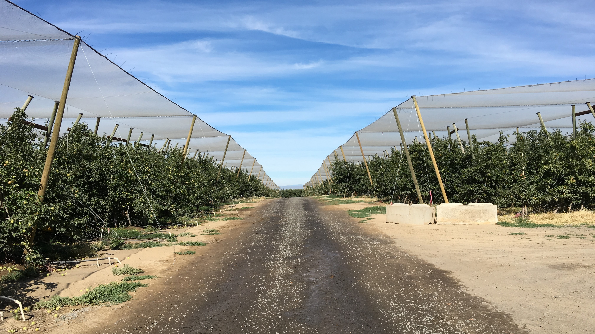

Project Management
A capital project can be an overwhelming addition to your regular workload. With 14 years of experience in the construction industry, RRC has the knowledge to oversee a variety of capital projects for you. You can focus on farming, while Red Rooster Consulting ensures your projects are completed according to your expectations. RRC is available for any or all of the following project management tasks:
- oversee your entire capital project, giving us the ability to hold the contractor/s accountable to your project plans and specifications, and helping foresee and minimize cost over-runs
- manage the permitting processes for wells, septic, and building construction as well as licensing requirements for the Washington State Department of Health
- create a professional site plan for your permit application to ease the permitting process
- locate and stake your project features as specific guidelines for the contractor